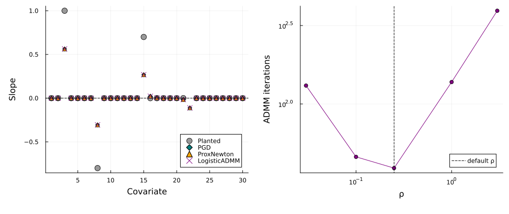

Sparse logistic regression: PGD, proximal Newton and ADMM
Four solvers in this package fit sparse logistic regression: proximal gradient descent (ProximalGradientDescent), its accelerated variant (AccProxGradDescent), proximal Newton (ProxNewton) and the alternating direction method of multipliers on a split of the predictor (LogisticADMM). This page runs three of them, PGD, ProxNewton and LogisticADMM, on one seeded problem, checks each returned point with an objective and a KKT score computed from the data, and reports the work each one needed. A second experiment shows how the iteration count of ADMM depends on its penalty ρ. The page counts iterations and inner work; it does not time the solvers.

The problem and the three methods
For responses $y_i\in\{0,1\}$, a design $\tilde X=[\mathbf{1}\;Z]$ with an intercept column and coefficients $b$, the solvers minimize the objective of the sparse logistic regression tutorial,
\[F(b)=\sum_{i=1}^n \{\log(1+e^{\eta_i})-y_i\eta_i\}+n\lambda\sum_{j=1}^{p}|b_j|,\qquad \eta=\tilde Xb,\]
with the loss summed over the observations, the level n * lambda and an unpenalized intercept.
- Proximal gradient descent takes a gradient step on the loss and a soft-thresholding step on the penalty, with a backtracking line search.
- Proximal Newton builds a weighted least-squares model of the loss at each iterate, solves it with coordinate descent, and searches along the result on the true objective.
- ADMM introduces the predictor $t=\tilde Xb$ as a variable of its own, with a scaled dual $u$ of one entry per observation. An iteration approximately solves a lasso problem in $b$ with the response $t-u$ (by warm-started coordinate descent within a pass budget), then $n$ separate scalar problems $\min_{t_i}\{\log(1+e^{t_i})-y_it_i+\tfrac{\rho}{2}(t_i-v_i)^2\}$ with $v=\tilde Xb+u$, and adds the violation $\tilde Xb-t$ to $u$.
ADMM is useful for teaching because the split separates the loss, which acts on the predictor, from the penalty, which acts on the coefficients: each subproblem is a problem studied on its own, a lasso and a one-dimensional logistic proximal step. It is not presumed to be faster than the other two methods, and its iteration count depends on ρ, as the second experiment shows.
using LinearAlgebra, Printf, Random, ProximalBase, ProximalSolvers
sigmoid(t) = t >= 0 ? inv(1 + exp(-t)) : exp(t) / (1 + exp(t))
softplus(t) = t > 0 ? t + log1p(exp(-t)) : log1p(exp(t))softplus (generic function with 1 method)Seeded data
There are 300 observations and 30 covariates with population correlation 0.5 between neighbours; four covariates carry signal and the true intercept is $-0.5$. The level is 0.3 times $\lambda_{\max}=\|Z^\top(\bar y-y)\|_\infty/n$, the smallest level at which the slopes vanish (tutorial).
rng = Xoshiro(448)
n, p = 300, 30
Z = randn(rng, n, p)
for j in 2:p
Z[:, j] .= 0.5 .* Z[:, j - 1] .+ sqrt(1 - 0.5^2) .* Z[:, j]
end
beta_true = zeros(p)
beta_true[[3, 8, 15, 22]] = [1.0, -0.8, 0.7, -0.6]
y = Float64.(rand(rng, n) .< sigmoid.(-0.5 .+ Z * beta_true))
@assert 0 < sum(y) < n
X = [ones(n) Z]
ybar = sum(y) / n
lambda_max = norm(Z' * (ybar .- y), Inf) / n
lambda = 0.3 * lambda_max
w = [0.0; ones(p)]
f = LogisticLoss(y, X)
g = NormL1(n * lambda, w);An accuracy check from the data
With $s_i=1-2y_i$ and $\eta=\tilde Xb$, the gradient of the summed loss is $\tilde X^\top(s\circ\sigma(s\circ\eta))$ and the KKT score of coefficient $j$ is $|g_0|$ for the intercept, $\max(|g_j|-n\lambda,0)$ for a zero slope and $|g_j+n\lambda\,\mathrm{sign}(b_j)|$ for a nonzero one. The largest score is zero exactly at a minimizer. The three solvers use different stopping rules, so each returned point is judged by this score and by the objective, not by the solver's flag.
function check(b)
eta = X * b
s = 1 .- 2 .* y
grad = X' * (s .* sigmoid.(s .* eta))
scores = [j == 1 ? abs(grad[1]) :
iszero(b[j]) ? max(abs(grad[j]) - n * lambda, 0.0) :
abs(grad[j] + n * lambda * sign(b[j])) for j in eachindex(b)]
(; objective = sum(softplus.(s .* eta)) + n * lambda * sum(abs, b[2:end]), kkt = maximum(scores))
endcheck (generic function with 1 method)The three solvers from the same start
Each solve starts from zero. PGD runs with the options of the tutorial; ProxNewton and LogisticADMM bound the KKT score of the returned point by tol = 1e-8, which LogisticADMM combines with its primal and dual residual tests. The work is reported in each method's units. For PGD: iterations, and its gradient-oracle calls, the one at the start included (grad_calls; the product X' * (0.5 .- y) that PGD forms once for the scale of its stationarity check is not one of them). For ProxNewton: outer iterations and the coordinate passes of its inner solves. For ADMM: iterations, the coordinate passes of its lasso steps, and the root steps, the Newton or bisection points of its scalar roots (the evaluation at the starting point of each root is not a step). A coordinate pass is full, over every coordinate, or active, over the nonzero ones.
b_pgd = zeros(p + 1)
options = ProximalOptions(maxiter = 20_000, ftol = 1e-15, xtol = 1e-12, gradtol = 1e-10, allow_f_increases = true)
r_pgd = solve!(b_pgd, f, g, ProximalGradientDescent(), options)
b_pn = zeros(p + 1)
r_pn = solve!(b_pn, f, g, ProxNewton(tol = 1e-8))
b_admm = zeros(p + 1)
r_admm = solve!(b_admm, f, g, LogisticADMM(tol = 1e-8))
@assert r_pgd.converged && r_pn.converged && r_admm.converged
checks = [check(b_pgd), check(b_pn), check(b_admm)]
Fbest = minimum(c.objective for c in checks)
@printf("%-14s %10s %32s %16s %12s\n", "solver", "iterations", "inner work", "objective - min", "KKT score")
@printf("%-14s %10d %32s %16.2e %12.2e\n", "PGD", r_pgd.iterations,
@sprintf("%d gradient-oracle calls", r_pgd.grad_calls), checks[1].objective - Fbest, checks[1].kkt)
@printf("%-14s %10d %32s %16.2e %12.2e\n", "ProxNewton", r_pn.iterations,
@sprintf("%d passes", r_pn.passes), checks[2].objective - Fbest, checks[2].kkt)
@printf("%-14s %10d %32s %16.2e %12.2e\n", "LogisticADMM", r_admm.iterations,
@sprintf("%d passes, %d root steps", r_admm.passes, r_admm.root_iterations), checks[3].objective - Fbest,
checks[3].kkt)solver iterations inner work objective - min KKT score
PGD 38 40 gradient-oracle calls 8.53e-14 4.51e-09
ProxNewton 4 64 passes 0.00e+00 5.70e-10
LogisticADMM 39 223 passes, 180147 root steps 0.00e+00 8.92e-09The common accuracy target, for these three runs from zero, is a KKT score of at most 1e-6 on the scale of the summed loss, and objectives within 1e-10 of each other relative to the objective; every solver must meet both. The ADMM coefficients, intercept included, are also compared with those of PGD and of ProxNewton. These checks establish agreement within the stated tolerances on this problem, in Float64; they are not a proof of optimality or of a common minimizer. ADMM also reports the residuals of its two optimality conditions, dual_kkt for $0\in\partial g(b)+\rho\tilde X^\top u$ and predictor_residual for $\sigma(t)-y=\rho u$.
@assert all(c -> c.kkt <= 1e-6, checks)
@assert all(c -> c.objective - Fbest <= 1e-10 * Fbest, checks)
@assert norm(b_admm - b_pn, Inf) <= 1e-5 && norm(b_admm - b_pgd, Inf) <= 1e-5
@printf("ADMM: primal residual %.2e (threshold %.2e), dual residual %.2e (threshold %.2e)\n",
r_admm.r_norm, r_admm.eps_pri, r_admm.s_norm, r_admm.eps_dual)
@printf("ADMM: dual_kkt %.2e, predictor_residual %.2e\n", r_admm.dual_kkt, r_admm.predictor_residual)ADMM: primal residual 4.79e-09 (threshold 1.39e-05), dual residual 3.28e-08 (threshold 5.30e-05)
ADMM: dual_kkt 2.00e-08, predictor_residual 6.66e-16The penalty ρ of ADMM
ADMM's iteration count depends on ρ, which weights the constraint $t=\tilde Xb$ in the augmented Lagrangian. The sweep below solves the same problem from zero for several values of ρ, with the same tolerances; the default is ρ = 1/4, the bound on the curvature of the loss of one observation.
rhos = [0.03, 0.1, 0.25, 1.0, 3.0]
sweep = map(rhos) do rho
b = zeros(p + 1)
r = solve!(b, f, g, LogisticADMM(ρ = rho, tol = 1e-8))
@assert r.converged && check(b).kkt <= 1e-6
(rho = rho, iterations = r.iterations, passes = r.passes, roots = r.root_iterations)
end
@printf("%8s %10s %10s %12s\n", "ρ", "iterations", "passes", "root steps")
for s in sweep
@printf("%8.2f %10d %10d %12d\n", s.rho, s.iterations, s.passes, s.roots)
end ρ iterations passes root steps
0.03 131 612 802407
0.10 46 271 273366
0.25 39 223 180147
1.00 138 754 505154
3.00 393 1989 1792077A warm start at a solution
Without a supplied predictor and dual, LogisticADMM starts from $t=\tilde Xb$ and $u=(\sigma(t)-y)/\rho$. With these, an exact minimizer of the same objective is a fixed point of the ideal iteration. A warm start from another solver's solution, or from the fit at another level, can move from its start, and the number of iterations it takes depends on the fit. On this problem the start at the ProxNewton solution converges in one iteration and changes the coefficients by at most 1e-8, which the script checks.
b_warm = copy(b_pn)
r_warm = solve!(b_warm, f, g, LogisticADMM(tol = 1e-8))
@assert r_warm.converged && r_warm.iterations == 1 && norm(b_warm - b_pn, Inf) <= 1e-8
@printf("warm start at the ProxNewton solution: %d iteration, largest change %.1e\n",
r_warm.iterations, norm(b_warm - b_pn, Inf))warm start at the ProxNewton solution: 1 iteration, largest change 7.1e-12The figure
The left panel shows the planted slopes and the estimates of the three solvers, which agree to the accuracy checked above. The right panel shows the iterations of ADMM against ρ, both on logarithmic scales.
using Plots
left = scatter(1:p, beta_true; label = "Planted", color = :gray60, markersize = 6,
xlabel = "Covariate", ylabel = "Slope", legend = :bottomright)
scatter!(left, 1:p, b_pgd[2:end]; label = "PGD", color = :teal, marker = :diamond)
scatter!(left, 1:p, b_pn[2:end]; label = "ProxNewton", color = :orange, marker = :utriangle, markersize = 4)
scatter!(left, 1:p, b_admm[2:end]; label = "LogisticADMM", color = :purple, marker = :x, markersize = 5)
hline!(left, [0.0]; color = :black, linestyle = :dash, label = "")
right = plot([s.rho for s in sweep], [s.iterations for s in sweep]; marker = :circle, label = "",
xscale = :log10, yscale = :log10, xlabel = "ρ", ylabel = "ADMM iterations", color = :purple)
vline!(right, [0.25]; color = :black, linestyle = :dash, label = "default ρ")
figure = plot(left, right; layout = (1, 2), size = (1000, 420), left_margin = 5Plots.mm, bottom_margin = 5Plots.mm)
savefig(figure, "logistic_solvers.svg")
nothingLimitations
The comparison uses one seeded problem, one level and one start; other data, levels and starts can change the counts and their ordering. The work units differ between the methods: a PGD iteration forms products with $\tilde X$ and its transpose, a coordinate pass visits every coordinate or the nonzero ones, and a root step evaluates two exponentials (for the curvature and for the residual at the new point). The counts are therefore not a measure of speed, and the page makes no timing claim. The tolerances of the three solvers mean different things; the independent score and objective above are the measure the page applies to all three.
What we learned
On this problem the three methods return points that agree within the checked tolerances, judged by the objective and the KKT score from the data. ADMM splits the problem into a lasso step, scalar logistic steps and a dual update; its iteration count depends on ρ, and with its default dual a start at the ProxNewton solution of the same problem stopped after one iteration here.